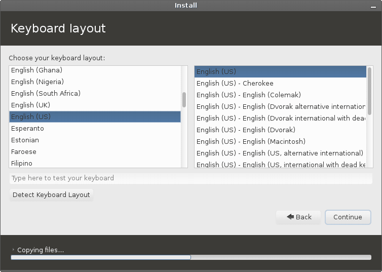
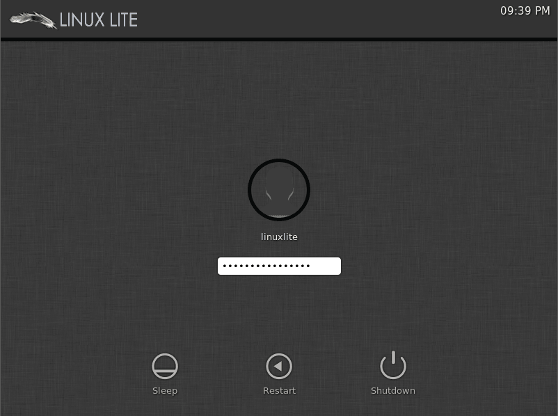
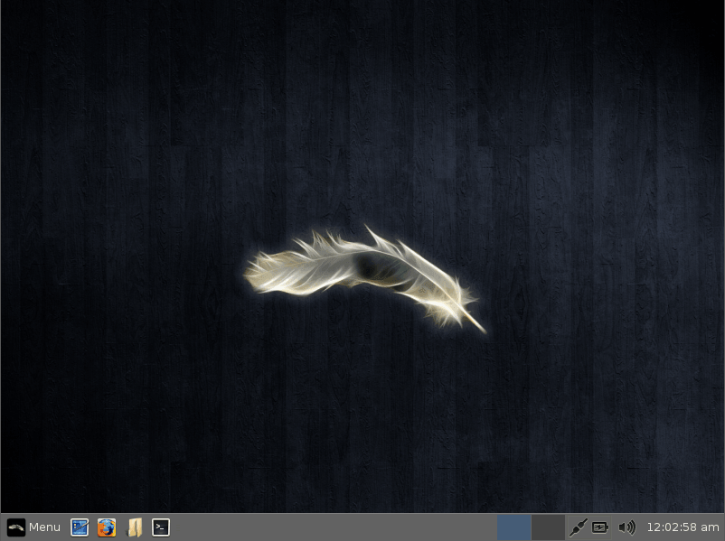

Linux Lite Installation Guide
Installing Linux Lite to your computer
Adding another User in the future
Removing a User
Terminal Basics
Writing the Linux Lite ISO to a DVD
Here is some free DVD burning software for you to select from:
BurnAware Free - http://www.burnaware.com
CDBurnerXP - http://cdburnerxp.se/
ImgBurn - http://www.imgburn.com/
Place a blank DVD in your DVD drive, open up the program, select the iso file that you want to burn. Choose the lowest burn speed, this will greatly reduce the risk of your burn becoming corrupt as can sometimes happen. A 4x speed is recommended if you have it.
Writing the Linux Lite ISO to USB using software
Unetbootin:
UNetbootin allows you to create bootable Live USB drives. Unetbootin is available for Windows, Mac and Linux.
Download and
follow instructions from here -
http://unetbootin.sourceforge.net/
Writing the Linux Lite ISO to USB using a terminal in Linux
To find out the letter of your usb stick, open a terminal and type:
df -h It is usually
listed as 'media' or similar.
Be very careful to make sure you choose the right drive letter,
as you can see in the Filesystem column, my device is
sdb another clue is the value in the Size column, here it
is shown as 15G. In this example my device is an Apacer
15gb USB stick.

Open a folder and make sure you are in the directory that the
iso file is in. Open a terminal in that directory and type the following:
| sudo dd if=linux-lite-1.0.6-alpha-preview-32bit.iso of=/dev/sdx bs=4M |
where 'x' is the letter of your usb device.
The Live DVD/USB image will boot into the desktop automatically, there is no need to login manually.
Installing Linux Lite to your
computer
Start your computer, and go into your system Bios and check
that the boot order is set so that DVD and USB devices are set
to boot first. This varies from bios to bios. Refer to your
motherboard documentation for more information.
Once you are happy with your bios set up, insert the DVD disc or
USB stick into your computer and reboot your computer. You'll
be greeted with the following screen.
In most cases you'll want to choose Live. This is also a good
way to check that all of your hardware is supported.
The computer will go through the boot up process, this may take
anywhere from a few seconds to a couple of minutes depending on
your hardware. The login for the Live user is automatic, there
is no need to login. An explanation of the various Menu's can be
found by clicking here.
The other options are:
Safe Mode - If you are having trouble booting the Live option, try this instead.
Install - Begin the install process immediately.
Terminal - This will boot up the computer in text mode, showing you each of the processes as they run.
Debug Mode - Similar to the Terminal option.
Memtest - Test your computer memory for faults.
HDD - Boot the from the first hard disk.
NOTE: If you are having any trouble booting the Live DVD/USB, please read through this trouble shooting guide.
Once you've had a look around Linux Lite and are ready to install the first step is to double click on the Install Linux Lite icon on your Desktop.

The installer will then open on the desktop and display the Welcome section of the installer. From here you will select your preferred language and view release notes for this version of Linux Lite.

After selecting continue, you are presented with some requirements for the installation. Ensure that these requirements are met by viewing a check mark beside them. You may also choose to download any available updates while installing or install third-party software during the installation. NOTE: Please verify the legal status of the use of the third party software in your country/territory.

Now it is time to choose the method of installing Linux Lite to your hard disk. You will have several options during this phase of the installer. You may choose to erase the entire disk and install Linux Lite, if you are running a version of Windows you may be presented with the options of installing Linux Lite over Windows or installing it alongside Windows. If these options do not facilitate your needs, there is a manual partitioning option labeled Something Else.
Erase Disk and Install Linux
Upon selecting Erase Disk and Install Linux you are presented with a screen displaying how your install will be represented on the hard disk. This is the most simple option available and will show your hard disk being completely and solely occupied by Linux Lite. You may select the disk you wish to install Linux Lite to from the menu labeled: Select Drive. You may then select Install Now when you are ready to begin installing.

Install Linux alongside Windows
If you have selected to install Linux Lite alongside an existing copy of Windows, you will be greeted with a screen representing the two operating systems on the disk. You may choose the disk to install Linux Lite to from the top menu labeled: Select Drive. In the main part of the window you will see your hard disk split into two sections, one containing your Windows install and one for your proposed Linux Lite installation. You may drag the empty space between them to allocate space from one to the other as needed. You may then select Install Now after you have made the desired changes.
Something Else !! ADVANCED USERS ONLY !!
If the other methods do not fulfill your personal requirements for installation you may select Something Else and manually partition your hard disk. There are many options available from this screen. All of your disks will be visible in a hierarchal tree view in the main window. From here you can see disk devices, existing partitions, and unallocated space. If your disk is new or you are creating a new install in a virtual machine you may need to select New Partition Table from the options below. This will erase the disk and provide you with a clean slate. WARNING: This will destroy any data on the disk selected! Another option is to add a partition to the disk by selecting Add from the button options. This option requires that there exists free space on the disk with which to create the partition. When adding a partition, you may select the place on the disk to create the partition, the partition size, the filesystem type, and the point in the filesystem that this partition will be mounted. If you need to modify these attributes of a partition, you may select Change from the button options. If there exists partitions that you wish to be rid of, you can select Delete from the button options to delete the partition. If you wish to return everything back to its original state you may use the Revert button. NOTE: This will only work if you have not written changes to the disk!
Under the partitioner there is a menu for selecting the location of the boot loader's installation. You may select a drive's MBR, indicated by the device name e.g. /dev/sda, or you may select a partition to install the boot loader to. The safest option is to install the bootloader to the MBR of the first disk as the bootloader will intelligently add entries for installations of Windows and other Linux installs.

After completing the partitioning phase of the installation, you are prompted to set up some personal details about the system. The installer will continue to work in the background while you are filling out this information. The first step is to select your time zone. The installer may detect your time zone based on your location via your ISP's information. If not, you may select your time zone by either clicking on your region on the supplied map or by typing in your area in the box below.
The next step is to select your keyboard language and layout. You may select the language that your keyboard corresponds to on the left and any specialized layout on the right. This is the point where you may select to enable international keys on your keyboard. Though, these options may be changed later.

On the next screen, you are greeted by several forms to fill. These forms include your personal name, the name that you wish to use to identify the computer on your network, your user name that is used to login to the system, and your password that you wish to use for your user and root password. When creating a password, it is the best practice to use a complex and lengthy password, though one you can still remember. There are also options to enable auto-login for your user or have the computer prompt you for a password everytime you login. Finally, there is a selection for encrypting your user's Home folder for extra security.
After finishing all of these steps you will be greeted with a slideshow detailing all of the features and software that are included in this version of Linux Lite. You may allow them to play on their own or navigate through them using the arrow buttons on the sides of the window.

Once the installation is complete you will be prompted to either restart your computer and begin using your newly installed Linux Lite system or to continue using the testing environment on the DVD/USB that you are using.
After a reboot you will be greeted by the login screen:

After you have logged in you will see the desktop. Congratulations! Now that we've installed Linux Lite, lets take a look at what's available on the Menu by clicking here.

To add another user, open up a Terminal and type in the following:
| sudo adduser name |
where name is the name of your new user. The only details
you will need to enter is:
your password
Enter new UNIX password:
Retype new UNIX password:
All the other details are voluntary and not necessary.
Is the information correct? [Y/n] (press enter if they are correct)

| NOTE: If you have already enabled auto login for another user, you will need to disable it so that your new user can login. If you don't want to disable auto login for yourself, you can click on 'Menu, Lock Screen' choose 'New Login' from the locked screen and the newly created user can then login. Only one user can have auto login enabled at a time. |
To remove a user, open up a Terminal and type in the following:
| sudo userdel name |
enter your sudo password and where name is the name of
the user you want to remove.
If you want to remove their home directory as well (make sure you
backup any files you want to save first)
| sudo userdel -r name if you get a message saying they are still logged in, try: sudo userdel -r -f name |
enter your sudo password and replace name with the name of
the user you want to remove.
Linux Lite is designed to be such that new users won't have to venture into the terminal to much. But, there will be some occasions where we need to run the odd terminal command. The following is a very basic introduction to some of the more common terminal commands that will help you to navigate around your computer, should you need to.
TIP: instead of typing out the entire name of a file or folder, type the first few letters and hit your TAB key, this will auto complete the name. This will save you lots of time but be careful and make sure you have typed the correct file name. In the examples below 'directory' also means 'folder'.
ls - display a list of files in the current directory
ls -la - a more comprehensive display of file properties in the current directory, including hidden files
pwd - shows you the current directory you are in
cd - change directory, change to another directory
cd .. - go back one directory
cp - copy file to another directory
rm - remove a file or directory
rm -rf - permanently delete a file or directory
mv - rename a file or directory
cat - display the contents inside a file

mkdir - make a new folder
rmdir - remove a folder
killall - kill a program with that name
man - read the manual for a particular program (type q to exit the manual)